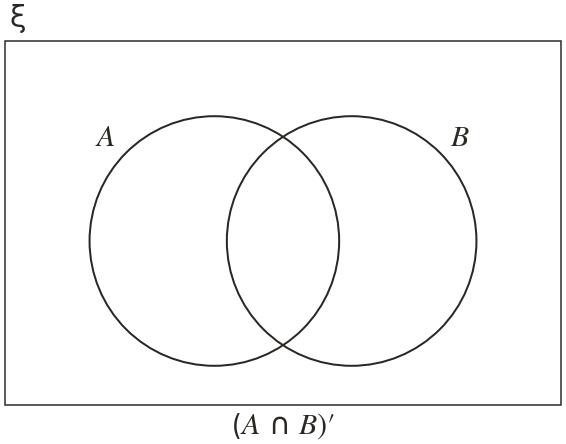
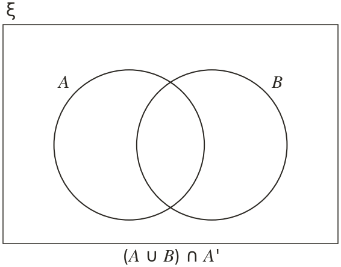
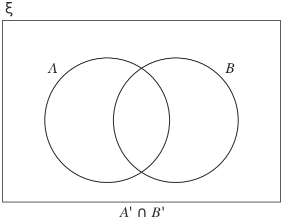
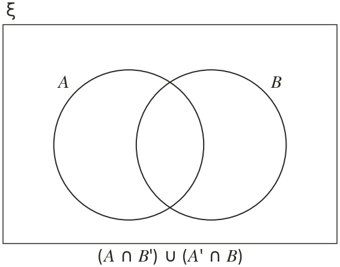
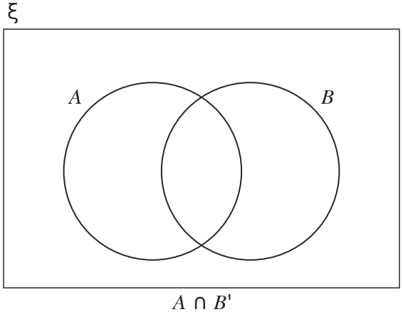
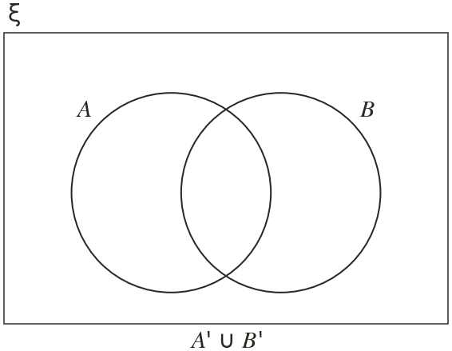

Westonbirt Maths · Probability and Sets
Shading Compound Regions
Name: ______________________ Date: ____________
1
Shade ∩

2
Shade ∪ ∩

3
Shade ∩

4
Shade ∩ ∪ ∩

5
Mo is asked to shade ∩ He shades the region outside both circles. What is his mistake? Shade ∩

Ext
Shade ∪ Compare it with question
What do you notice?
What do you notice?
